CSS hỗ trợ thiết lập các thuộc tính liên quan đến chọn phông (font-family), chọn cỡ chữ (font-size), chọn kiểu chữ (font-style), độ dày nét chữ (font-weight) và nhiều thuộc tính khác.
• font-family: CSS cho phép thiết lập mẫu định dạng chọn phông sử dụng thuộc tính (font-family) . Trên máy tính có thể cài đặt nhiều phông chữ khác nhau, mỗi phông chữ có một tên riêng. Tuy nhiên, các phông chữ có thể được chia làm năm loại sau: serif (chữ có chân); sans-serif (chữ không chân) ; monospace (chữ có chiều rộng đều nhau); cursive (chữ viết tay); fantasy (chữ trừu tượng).
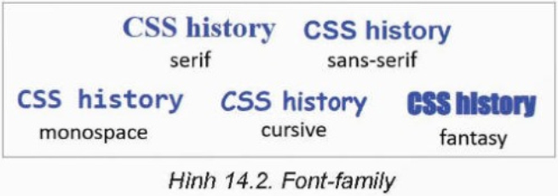Ví dụ: Mẫu CSS sau cho biết cách thiết lập phông chữ cho các thẻ h1, lựa chọn các phông ưu tiên theo thứ tự Times, Times New Romans, Tahoma, cuối cùng là một phông loại có chân bất kì.
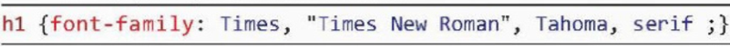 Trong ví dụ trên, sau thuộc tính f
ont-family là một hay một danh sách các tên phông chữ.
Nếu tên phông chữ có chứa dấu cách thì cần đặt trong hai dấu nháy kép (hoặc nháy đơn).
Danh sách các phông chữ này thường cùng loại và tên của loại phông đó ở vị trí cuối cùng.
Nếu đưa ra một danh sách các phông chữ, trình duyệt sẽ lần lượt tìm các phông trong danh sách từ trái sang phải để chọn thể hiện văn bản.
Nếu không tìm thấy phông chữ nào trong danh sách thì sẽ chọn phông cùng loại bất kì.
• font-size: Thuộc tính này sẽ thiết lập cỡ chữ. Cú pháp của mẫu định dạng như sau:
Cỡ chữ có thể là một trong những dạng sau:
- Cỡ chữ theo đơn vị đo chính xác tuyệt đối, ví dụ: cm (centimét), mm (milimét), in (inch=2,54cm), px (pixel=1/96inch),
pt (point=1/72inch).
- Cỡ chữ theo các đơn vị đo tương đối: em (so với cỡ chữ hiện thời của trình duyệt),
ex (so với chiều cao chữ x của cỡ chữ hiện thời), rem(so với cỡ chữ của phần tử gốc html của tệp HTML).
- Cỡ chữ theo tỷ lệ phần trăm (%), cỡ chữ của phần tử cha.
- Cỡ chữ theo các mức xx-smal, x-smal, smal, medium, large, x-large, xx-large. Cỡ chữ mặc định là medium.
Ví dụ:
• font-style: Thuộc tính này thiết lập kiểu chữ thường hay chữ nghiêng của văn bản.
Thuộc tính này có hai giá trị là normal (thường) và italics (nghiêng).
• font-weight: Thuộc tính này thiết lập kiểu chữ đậm. Giá trị của thuộc tính này có thể đặt bằng chữ là normal (bình thường),
bold (đậm) hoặc đặt bằng các giá trị 100, 200,… 900, trong đó các mức độ viết đậm từ 500 trở lên.
Ví dụ: Mẫu sau thiết lập các thẻ strong và em với kiểu chữ nghiêng và đậm khác nhau.
Thuộc tính color sẽ thiết lập màu chữ. Một số giá trị màu cơ bản cho thuộc tính này như sau: black (đen), white (trắng), purple (tím), blue (xanh dương), orange (cam), red (đỏ), green (xanh lá cây), yellow (vàng). Một số ví dụ thiết lập thuộc tính màu chữ.
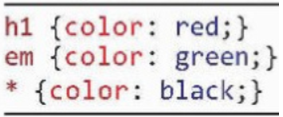Bộ chọn với ký tự * là tất cả các phần tử HTML của trang web. Khi áp dụng CSS trên thì các phần tử h1 có chữ màu đỏ, các phần tử em có chữ màu xanh lá cây, còn toàn bộ các phần tử còn lại có chữ màu đen.
Các mẫu định dạng loại này sẽ thiết lập các thuộc tính liên quan đến các dòng văn bản khi thể hiện trên trình duyệt. Để hiểu cách định dạng này cần biết đường cơ sở (baseline) và chiều cao dòng văn bản (line-height).
Đường cơ sở (baseline) là đường ngang mà các chữ cái đứng thẳng trên nó. Chiều cao dòng văn bản là khoảng cách giữa các đường cơ sở của các dòng trong cùng một đoạn văn bản. CSS sẽ mặc định coi chiều cao = 2em và thể hiện bằng cách bổ sung khoảng cách phía trên và dưới của văn bản. Hình 14.3 cho chúng ta hình dung đường cơ sở (baseline) và chiều cao dòng (line-height).
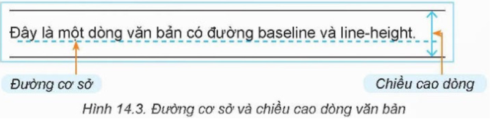• line-height. Thuộc tính này dùng để thiết lập chiều cao dòng cho bộ chọn của mẫu định dạng. Ngoài các đơn vị đo thông thường, còn có thể thiết lập các số đo tương đối như sau:
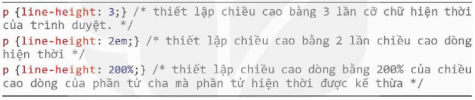• text-align. Thuộc tính này thiết lập căn lề cho các phần tử được chọn. Các kiểu căn hàng bao gồm: left, center, right, justify. Ví dụ:
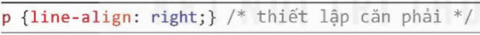• text-decoration. Thuộc tính này thiết lập tính chất “trang trí” dòng văn bản bằng các đường kẻ ngang trên, dưới hay giữa dòng. Thuộc tính này sẽ thay thế và mở rộng cho thẻ u của HTML. Thuộc tính này có bốn giá trị thường sử dụng là none (mặc định không trang trí), underline (đường kẻ dưới chữ), overline (đường kẻ phía trên chữ) và line-through (kẻ giữa dòng chữ) như minh họa ở Hình 14.4.
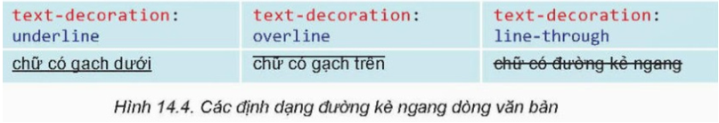• text-indent. Thuộc tính định dạng thụt lề dòng đầu tiên. Nếu giá trị lớn hơn 0 thì dòng đầu tiên thụt vào. Nếu giá trị nhỏ hơn 0 thì dòng đầu tiên lùi ra ngoài còn gọi là thụt lề treo (hanging indent).
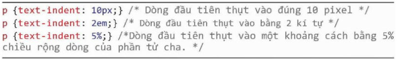Một tính chất rất quan trọng của CSS là tính kế thừa. Nếu một mẫu CSS áp dụng cho một phần tử HTML bất kì thì nó sẽ được tự động áp dụng cho tất cả các phần tử là con, cháu của phần tử đó trong mô hình cây HTML (trừ các trường hợp ngoại lệ, ví dụ các phần tử với mẫu định dạng riêng). Ví dụ CSS sau định dạng chữ màu xanh dương cho thẻ body:
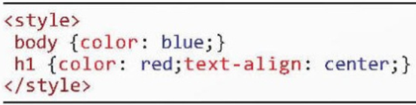Trong Hình 14.5 chỉ riêng thẻ h1 có chữ màu đỏ do được định dạng theo mẫu CSS còn các phần tử h2 và p đều kế thừa từ phần tử cha body có chữ màu xanh dương.
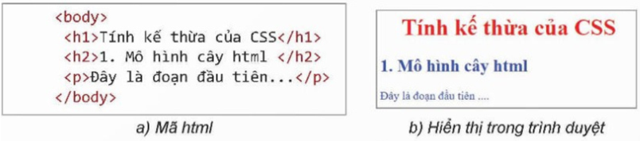Do được phép có nhiều mẫu định dạng CSS nên có thể xảy ra trường hợp nhiều mẫu cùng áp dụng cho một phần tử HTML, khi đó câu hỏi đặt ra là trình duyệt sẽ chọn các mẫu định dạng theo thứ tự ưu tiên nào để áp dụng?
Khi đó trình duyệt sẽ thực hiện mẫu định dạng được viết cuối cùng. Đây chính là tính chất “cascading” của CSS. Trong ví dụ mẫu CSS sau có hai định dạng cùng được áp dụng cho h1, mẫu đầu quy định căn giữa, mẫu sau quy định căn trái.
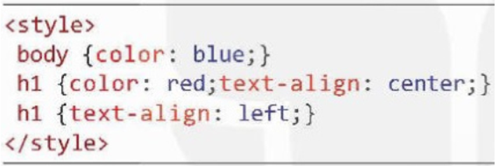Khi áp dụng cho ví dụ sau, phần tử h1 được căn trái theo mẫu cuối cùng của CSS:
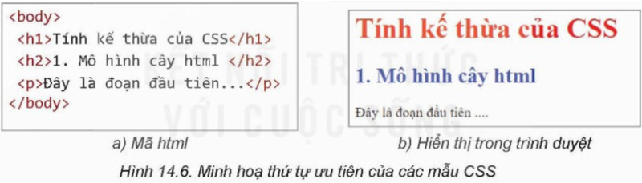 CSS còn cho phép sử dụng ký hiệu * và !important với ý nghĩa như sau:
• Kí hiệu * dùng trong bộ chọn sẽ có ý nghĩa là phần tử bất kì. Nếu có một mẫu định dạng chứa ký tự * thì định dạng này sẽ được áp dụng cho mỗi phần tử mà chưa có trong bất cứ mẫu định dạng nào khác của CSS. Mức độ ưu tiên của * là thấp nhất.
• Kí tự !important important nếu được sử dụng trong một mẫu định dạng thì mẫu này với thuộc tính tương ứng sẽ được ưu tiên cao nhất mà không phụ thuộc vào vị trí của mẫu trong CSS. Chú ý ký hiệu !important cần được viết ngay sau thuộc tính cần đánh dấu ưu tiên.
Chỉ thuộc tính này của bộ chọn có thứ tự ưu tiên cao nhất.
Ví dụ: Mẫu CSS có hai mẫu định dạng với cùng bộ chọn là h1. Mẫu đầu tiên có !important với thuộc tính “text-align : center;” nên thuộc tính này sẽ được ưu tiên cao nhất. Mẫu thứ hai của h1 có dạng “text-align : left; color : red;”
thì thuộc tính màu sắc sẽ được ưu tiên áp dụng. Mẫu cuối cùng có ký hiệu * sẽ có mức ưu tiên thấp nhất mặc dù nó được viết ở vị trí cuối cùng. Kết quả áp dụng CSS trên cho tệp HTML như Hình 14.7.